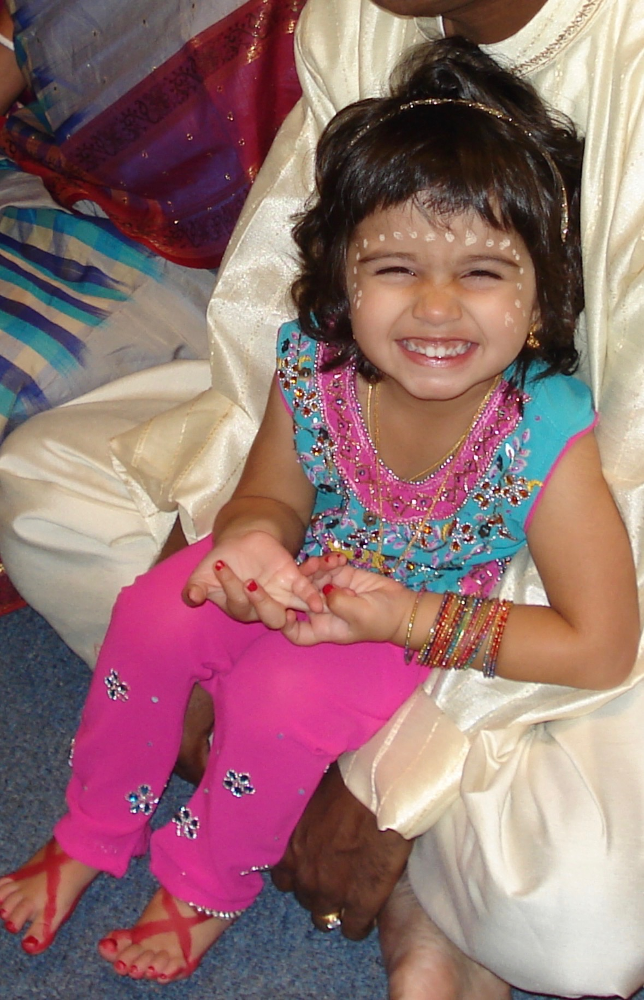

Our Mission
The Fourth Trimester Project is dedicated to improving awareness, support, and care for mothers during the postpartum period. The weeks and months after childbirth are a critical time for both physical recovery and mental health, yet postpartum care in the United States is often limited and inconsistent. Our goal is to highlight the importance of the fourth trimester while helping mothers and families access reliable information and supportive resources.
Why the Fourth Trimester Matters
The postpartum period, often called the fourth trimester, is a time of significant physical, emotional, and social change. Many mothers experience health challenges after childbirth, including complications such as bleeding, high blood pressure, infection, and postpartum depression. Despite these risks, postpartum care in the United States is often limited to a single follow-up visit weeks after delivery, leaving many families without consistent support during a critical stage of recovery.
Our Goals
The Fourth Trimester Project focuses on several key goals:
- Raise awareness about postpartum health and maternal recovery
- Promote accessible information about mental and physical health during the postpartum period
- Highlight research on maternal health outcomes and disparities
- Encourage policies and practices that strengthen postpartum care systems
Accessing Support
One of the core goals of this project is to make it easier for mothers and families to find trusted support. Our website includes curated resources on topics such as postpartum mental health, physical recovery, breastfeeding support, and community organizations that assist new parents. By bringing these resources together in one place, we hope to help mothers navigate the challenges of the fourth trimester and find the support they need.
About the Founders

Paaru
Paaru Kaushik is a Political Science major interested in how policy can improve maternal health outcomes and access to care. Fun fact: her favorite snack is pineapple jalapeno pizza dipped in ranch.
Stella
Stella Pereira is a Computer Science and Criminology major who wants to learn more about how technology can be used to improve women's health. Fun fact: despite being vegetarian for over a decade, her favorite food is buffalo wings.